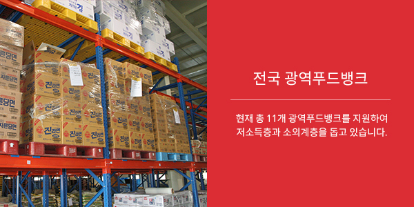
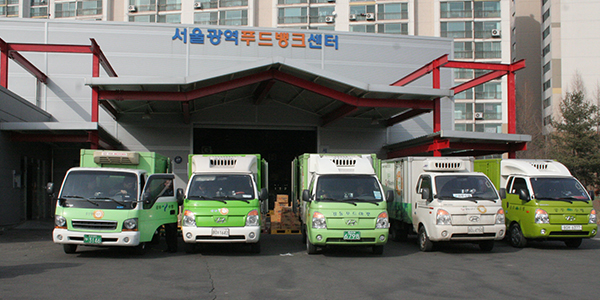
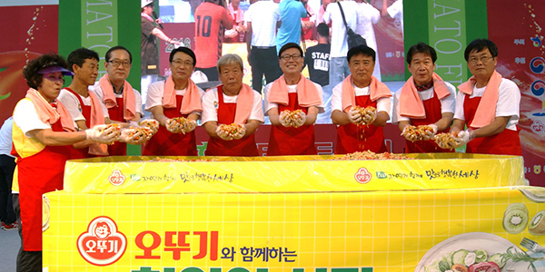
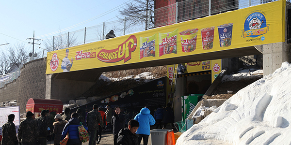
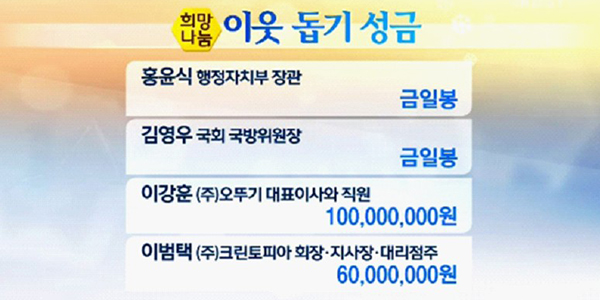
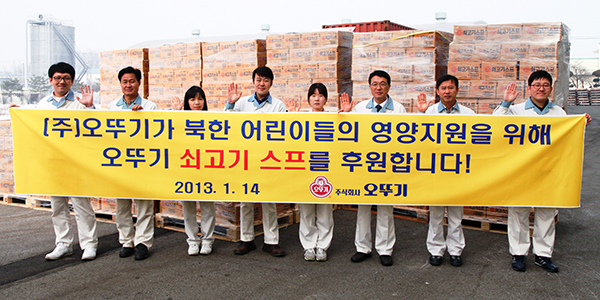

지속가능경영
- 사회공헌
- 식품을 통해 인류의 건강과 행복을 추구해오고 있는 ㈜오뚜기는 기업의 사회적 기여를 성실히 실천해 오고 있습니다.
기타 사회공헌


- 전국 광역푸드뱅크 물품 기부
- ㈜오뚜기는 전국 광역푸드뱅크를 통해 물품을 기부해오고 있습니다. 1999년 12월 경기광역 푸드뱅크를 시작으로 2006년 제주와 광주광역 푸드뱅크, 2007년에 서울과 울산광역푸드뱅크에 물품을 후원하였으며, 2010년에는 강원, 경북, 전북, 인천, 대구, 대전광역 푸드뱅크까지 확대하여 현재 총 11개 광역푸드뱅크를 지원하여 저소득층과 소외계층을 돕고 있습니다. ㈜오뚜기는 푸드뱅크를 통해 소외 계층을 지원하며 결식 문제를 해결함은 물론 식품의 낭비를 줄이고 식품 폐기로 인한 환경오염을 방지하는 노력을 기울이고 있습니다.
- 강원도 화천 토마토축제, 산천어축제 후원
- ㈜오뚜기는 지역사회와의 상생의 모범사례가 될만한 다양한 활동들을 진행하고 있습니다. 강원도 화천에서 진행되는 화천 토마토축제는 국내 제일의 토마토 산지로 자부하는 화악산 찰토마토와 지역 홍보를 위해 기획된 축제로, 건강과 재미를 한꺼번에 맛볼 수 있어 해를 거듭할수록 인기 축제로 거듭나고 있습니다. 특히 1,000인의 스파게티 만들기는 국내 1등 토마토 케챂 제조회사인 ㈜오뚜기의 후원으로 진행되어 많은 관람객들의 호응을 얻고 있습니다.
- 또한 문화체육관광부가 4년 연속 대한민국 대표축제로 선정한 화천 산천어축제에도 지난 2015년부터 공식 후원사로 참여하고 있습니다. 화천군과 ㈜오뚜기는 그동안 수차례의 잔치를 함께 치르며 기업과 농촌 주민간 상생의 신뢰 관계를 형성하고 있습니다.


- 이웃돕기 성금 기탁
- ㈜오뚜기는 불우한 이웃들이 따뜻하고 행복한 연말을 맞이할 수 있도록 2008년부터 매년 불우이웃돕기 성금을 KBS 한국방송과 사회복지공동모금회 사랑의열매를 통하여 전달하고 있습니다. 또한 천재지변으로 인한 어려움을 겪는 이재민들을 위하여 물품을 기부해오고 있습니다.
- 북한 어린이 돕기 물품 기부
- ㈜오뚜기는 북한 어린이들에게 나눔과 사랑을 실천하고자 식량부족으로 영양결핍을 겪는 북한어린이들을 위해 쇠고기스프를 전달하였습니다. 보내진 스프는 2012년 12월부터 2013년 10월까지 3차례에 걸쳐 쇠고기스프 4,096박스, 약 260만명의 어린이가 먹을 수 있는 물품을 전달하였습니다. 지난 2007년에는 북한 결핵 어린이돕기로 임직원이 참여하는 성금 모금으로 약 4천만원을 전달하기도 하였습니다.
- 세월호 사고지역 및 합동분향소 물품기부
- ㈜오뚜기는 세월호 사고로 인해 힘들어 하고 있는 유가족과 사고현장에서 묵묵히 땀흘리고 있는 자원봉사자들에게 작은 힘이 되고자 오뚜기 용기면 1,150박스, 참치 20박스 등의 구호물품을 진도군청을 통하여 전달하였습니다. 또한 희생자들의 합동분향소가 마련되어 있는 안산화랑유원지에 조문객 및 자원봉사자들을 위한 오뚜기 용기면 1,200박스를 대한적십자사 경기도 지사를 통하여 전달하였습니다.
- 메르스 집중관리병원 의료진 물품 지원
- ㈜오뚜기는 지난 2015년 창궐한 메르스로 고통받고 있는 환자들을 돌보며 목숨을 걸고 현장을 지키는 병원 의료진 및 관계자들을 위해 건국대학교 병원 등 총 9개 병원에 지원 물품을 전달하였습니다.

